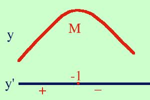

| y = -3x2 - 6x - 8 Calcolo la derivata prima della funzione y' = -6x - 6 Pongo la derivata uguale a zero per cercare eventuali punti estremanti -6x - 6 = 0 -6x = 6 6x = -6 x = -1 Calcolo il valore della funzione di partenza nel punto -1 f(-1) = -3·(-1)2 -6·(-1) - 8 = -5 il punto A( -1, -5) e' un punto estremante, devo vedere se e' un massimo, un minimo o un flesso Studio il segno della derivata prima -6x - 6 > 0 -6x > 6 6x < -6 x < -1 cioe' per valori minori di -1 la derivata e' positiva  Faccio un grafico (costruisco la figura dal basso verso l'alto) tracciando per y' l'orizzontale e segnando il punto x=-1; prima del punto la derivata e' positiva e scrivo +, dopo il punto e' negativa e metto -. Dove y' e' positiva traccio per la y una curva verso l'alto (crescente) mentre dove y' e' negativa traccio per la y una curva verso il basso (decrescente) ricordando che dove la derivata si annulla la curva deve essere orizzontale. Queste linee mi simulano l'andamento della funzione. Cio' che ottengo e' un punto di massimo, quindi A( -1, -5) e' un punto di Massimo per la funzione data e lo indico con M( -1, -5) in qualche testo potrai trovare invece che una riga continua con il + ed il - una riga a tratti per indicare valori negativi ed una linea continua per indicare valori positivi _________________-1 _ _ _ _ _ _ _ _ |